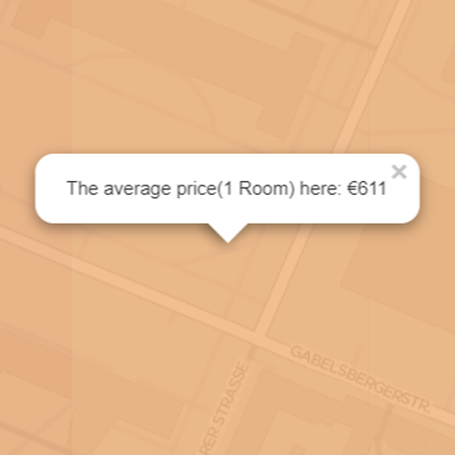
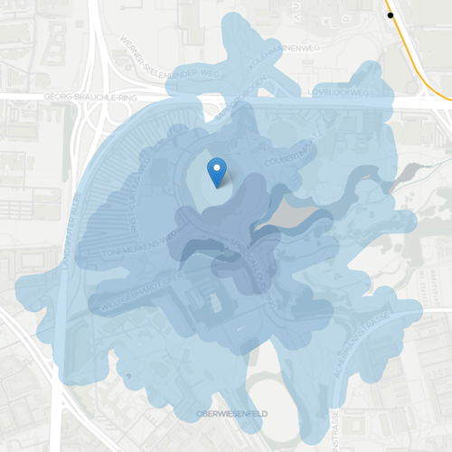
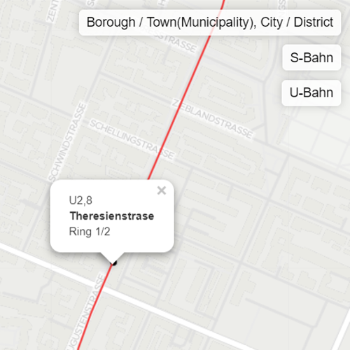
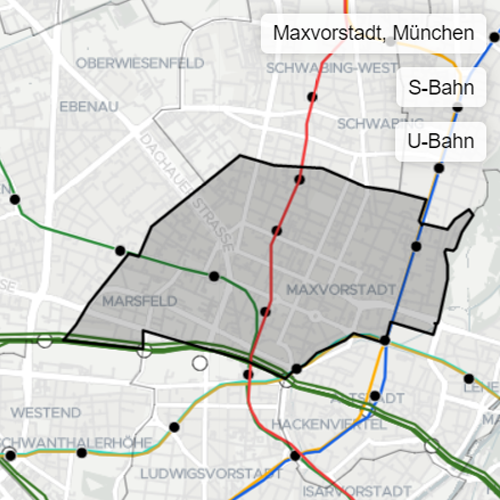

×
Finding Munich
Rental Price
Nearby Places
Metro Line & Station
Which City/District?
Change the layer and click on the map. See the price for 1 Room/Flatshare.
Move the icon to reposition. The distance is showed by walking distance.
Hover on the metro line, and click on the station. See the name and the ring.
Hover on the place. Look up the name and the range of the borough/town.



